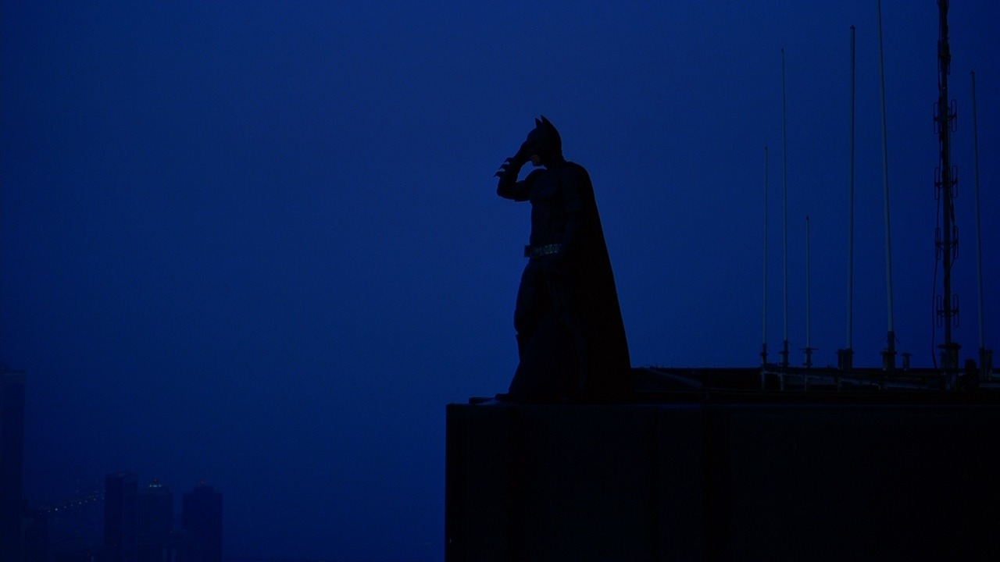

Fear and Loathing in Las Vegas

Aries, you’re bold and determined. The warm, energetic color palette in Fear and Loathing in Las Vegas channels your inner fire and uninhibited nature. You’re often described as electrifying, and the saturated neon colors in this film represent your quickness and spark. Face the world with courage and it will reward your confidence.
View full galleryHer

Taurus, your element is earth, making you grounded and comfort-seeking. The sandy, warm color palette in Her speaks directly to your desire for stability and predictability. Muted earth tones make you feel right at home, and you aren’t afraid to stay loyal to your roots. You keep going at your own pace. Stop and smell the roses.
View full galleryAmelie

Gemini, you’re witty and often described as the life of the party. The color palette in Amelie is quite charming and unique, just like you! The scenes in this film often explore visual anomaly with complementary colors, which is similar to how you think out of the box and embrace new experiences. People may not understand you at first, but don’t give up your identity because of misconceptions.
View full galleryThe Social Network
Cancer, you’re known as the most sensitive zodiac sign. That’s why the color palette in The Social Network is perfect for you! You’re emotionally charged and dramatic, and the intense contrast between shadow and light in this film mirrors your intense empathy for others. You feel both your own emotions and the emotions of others around you at maximum capacity. When you feel overwhelmed, take a deep breath. Your close circle will look out for you the same way you do for them.
View full galleryFantastic Mr. Fox
Leo, the lion, it’s all about you! You love to be the center of attention and the radiant color palette of Fantastic Mr. Fox is perfect for you. The summery orange hues are dazzling and fun, channeling your innate showmanship and warmth. Beware of excess vanity, and with self-awareness, you can conquer anything.
View full galleryLa La Land
Virgo, you love systems and you seek problem-solving opportunities. The color palette in La La Land fits perfectly into your organizational daydreams. Bright colors, often primary, are distinct from one another and signal narrative changes. What could be more satisfying?
View full galleryHarry Potter and the Chamber of Secrets
Libra, you’re receptive and charming. That’s what makes Harry Potter and the Chamber of Secrets perfect for you. The colors of Hogwarts are erudite and carry a degree of responsibility, which are qualities that your friends appreciate about you. You have a darker side that may be prone to worrying, which is represented by the deep shadows in this film. Trust your gut and your outlook will be brighter.
View full galleryThe Dark Knight
Scorpio, you’re used to being told that you’re the darkest and most brooding zodiac sign. So, your pairing with The Dark Knight shouldn’t come as much of a surprise. Similarly to Batman, you hide within your emotional fortress and fear being vulnerable above all else. The color choices in this film reflect your edgy emotional barricade, with lots of darkness and drama. Here’s a word of advice: lighten up sometimes. The world isn’t as evil as you think, and the people you trust are grateful for you.
View full galleryJoker
Sagittarius, you’re inquisitive and relentless when you find something to fixate on. Joker’s mixture of warm and cool colors represents your taste for exploration and your tireless passion. Some moments of the film are muted or bleak, but this does not have to portray a negative impression. Instead, it references your dedication to the truth, even if it is bleak. You’re an overachiever, and sometimes this quality makes you forget about the lighter and brighter colors in life. Be kind to yourself and remain open to new perspectives.
View full galleryLars and the Real Girl

Capricorn, you’re as straightforward as it gets. You’re an efficiency machine, sometimes perceived by others as stoic or cold. The color palette in Lars and the Real Girl is effective and restrained, just like you. However, there’s a lonely side when you funnel all your energy into work and independence. Warming up may change your color palette, but it would also make you feel a little less cold.
View full galleryTwilight

Aquarius, you’re the classic over-the-top blue color grading from Twilight. You’re quirky and many may roll their eyes at you, but there’s also something inadvertently charming and memorable about you. For all the time you spend in your mind, it makes sense that you’re cloaked in blue, the cerebral color. Keep striving to be contrarian, and you’ll amass a crowd of dedicated followers.
View full galleryRomeo + Juliet
Pisces, you’re an artist and a dreamer. Your imagination is the envy of many. That’s why the color palette from Romeo + Juliet is perfect for you. Baz Luhrmann creates a bright and surreal landscape through film, just like the inside of your mind. Embrace what makes you different and chase the ideas that you design.
View full gallery